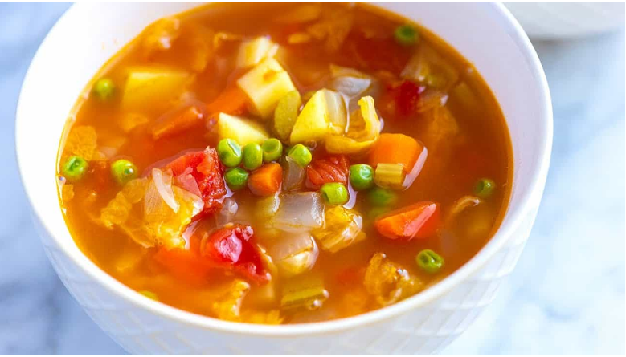

vegetable soup

vegetable soup
our recipe is simple fast to prepare and delicious
its ingredients are healthy
first we gonna talk about the ingredients
- peas
- Diced potatoes
- diced carrot
- onion
- Tomato paste
- Minced meat
- salt
- water
- fat
know the steps
- In a pot over the stove, fry the meat in the fat until cooked
- Add all the previous ingredients
- Leave it on low heat until cooked
You can serve it with pickles, fresh onions, and cooked rice with vermicelli.
ENJOY IT
HOME